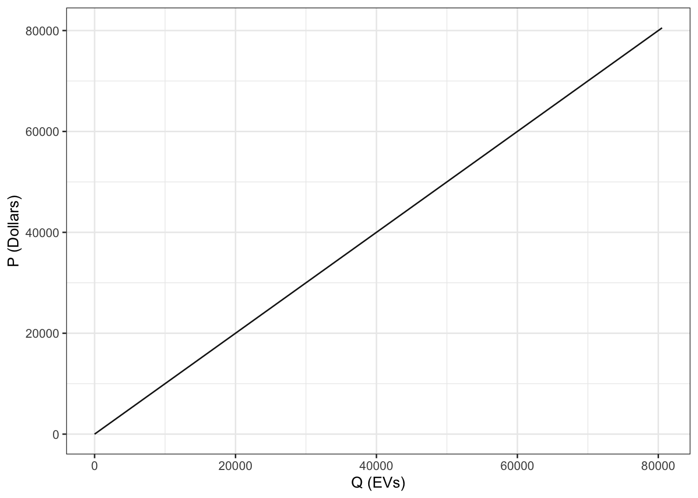

a3_dobbs_villanueva
Assignment 3
1.
\[\begin{aligned} \\ D_{DAC} &: P_{EV} = -6.611*Q_{EV} + 116855 \\ D_{nonDAC} &: P_{EV} = -2.731*Q_{EV} + 158034 \\ \\ \end{aligned}\]
DAC communities have an overall lower level of demand compared to non-DAC communities, likely reflecting the large disparity in wealth between the two groups that limits the ability of DAC communities to afford many EVs without some form of financial assistance.
The DAC community’s willingness to pay for EVs decreases much more rapidly than the non-DAC community. This is likely because the DAC community has collectively lower income and cannot afford to purchase very many EVs. There could be many underlying mechanisms at work that influence the income disparity we see between the groups, including but not limited to, systemic racism, lack of political power or civic engagement, being taken advantage of by private and public sector entities, legacies of white supremacy, generational trauma, and more.
2.
\[\begin{aligned} \\ &MEC_{EV} = 18900 \\ \\ \end{aligned}\]
3.
Code
dac_demand_fn <- function(Q){
P = (demand_dac$coefficients[2,1] * Q) + demand_dac$coefficients[1,1]
return(P)
}
dac_demand_fn_q_from_p <- function(P){
Q = ((1/demand_dac$coefficients[2,1]) * P) + (demand_dac$coefficients[1,1]/(-demand_dac$coefficients[2,1]))
return(Q)
}
nondac_demand_fn <- function(Q){
P = (demand_nondac$coefficients[2,1] * Q) + demand_nondac$coefficients[1,1]
return(P)
}
nondac_demand_fn_q_from_p <- function(P){
Q = ((1/demand_nondac$coefficients[2,1]) * P) + (demand_nondac$coefficients[1,1]/(-demand_nondac$coefficients[2,1]))
return(Q)
}Code
# new agg demand attempt
ev_agg_demand <- data.frame(price_dollars = seq(from = 0, to = 165000, by = 1000))
ev_agg_demand <- ev_agg_demand %>%
mutate(q_dac_fitted = ifelse(dac_demand_fn_q_from_p(price_dollars)>0, dac_demand_fn_q_from_p(price_dollars), 0)) %>% # fit dac regression results, but only for values greater than 0
mutate(q_nondac_fitted = ifelse(nondac_demand_fn_q_from_p(price_dollars)>0, nondac_demand_fn_q_from_p(price_dollars), 0)) %>% # fit nondac regression results, but only for values greater than 0
mutate(q_agg = q_dac_fitted + q_nondac_fitted) %>% # calc aggregate demand values
subset(q_agg > 0) # filter out 0 valuesMaking an aggregate demand function
We will make an aggregate demand function with two different line equations that are evaluated depending on whether Q is before or beyond the kink in the aggregate demand curve. The first line equation from (0, Q_kink) is simply D_nondac, though we must solve for the equation from Q_kink onward. We can do this with algebra, which involves first finding the Q of D_nondac at the equilibrium price, which gives us Q_kink. We then can solve for the horizontal sum below the y-intercept of D_dac, i.e. changing the y-intercept of D_nondac to equal the y-intercept of D_dac and horizontally summing (call this P’agg). From here, we can shift this curve by Q_kink, by taking P’agg(Q-Q_kink) to get the portion of the aggregate demand curve we will evaluate beyond Q_kink.
Code
q_kink = nondac_demand_fn_q_from_p(demand_dac$coefficients[1,1])
slope_agg = (demand_dac$coefficients[2,1]*demand_nondac$coefficients[2,1])/(demand_dac$coefficients[2,1] + demand_nondac$coefficients[2,1])
d_agg_beyond_kink_fn <- function(Q){
price = (demand_dac$coefficients[1,1] - (slope_agg * q_kink)) +
(slope_agg * Q)
return(price)
}
agg_demand_fn <- function(Q){
if (Q < q_kink) {
price = nondac_demand_fn(Q)
}
if (Q >= q_kink) {
price = d_agg_beyond_kink_fn(Q)
}
return(price)
}The aggregate demand curve for EVs is the following:
Code
[1] 49671.57The supply curve for EVs is the following:
Code

For consumer surplus (aka the overall welfare of consumers), we take the sum of the integral from [0, Q_kink] and the integral [Q_kink, Q*], minus P*xQ*.
Code
[1] 2474912870To find producer surplus, we multiply Q* x P* and divide by 2.
The environmental cost under the status quo is found by multiplying the MEC x Q*.
4.
To find how the current consumer benefit is divided between groups, we found the consumer surplus for both groups, added them to find the total, and then divided each group’s CS by the total to find the percent for each group. This also served as a check for the overall welfare found in question 3.
DAC consumer surplus:
Code
[1] 338017962non-DAC consumer surplus:
Code
[1] 2136894908Total consumer surplus:
Shares of consumer surplus:
[1] 0.1365777[1] 0.8634223The DAC group has ~14% of consumer surplus, while the non-DAC group has ~86%.
5.
Optimal tax is equal to the MEC(Q*), and since MEC = 18900 as a constant, the optimal tax will be $18900 per EV.
(a)
Code
[1] 43241.34The quantity of EV’s produced / consumed is decreased by the tax by 6,430 EVs, for a new Q* of 43,241 EVs.
(b)
The tax causes an increase in price of EVs by $12,427.26, with a new P* of $62,427.26.
(c)
Code
[1] 1673553441The overall welfare of non-DAC consumers is $1,673,553,441.
(d)
Code
[1] -593228313The overall welfare of DAC consumers is -$593,228,313.
(e)
The tax decreased producer surplus by $300,700,669 for a new value of $941,088,549.
Code
#Plot that shows aggregate demand, demand for both groups of consumers, MSC curve, MEC curve, and P*. This was used for our own visualization and understanding.
# ggplot() +
# geom_line(data = ev_agg_demand, aes(x = q_dac_fitted, y = price_dollars)) +
# geom_line(data = ev_agg_demand, aes(x = q_nondac_fitted, y = price_dollars)) +
# geom_line(data = ev_agg_demand, aes(x = q_agg, y = price_dollars)) +
# geom_line(data = ev_agg_demand_tax, aes(x = q_msc_supply, y = price_dollars)) +
# geom_line(data = ev_agg_demand_tax, aes(x = q_msc_supply, y = mec_per_ev)) +
# geom_line(data = ev_agg_demand_tax, aes(x = q_msc_supply, y = p_star_tax)) +
# xlim(0, 80000) +
# theme_bw()(f)
[1] 817261391The total environmental damage decreased by $121,531,258 for a new value of $817,261,391.
(g)
The tax generated a revenue of $817,261,391.
6.
(a), (b), (c)
Code
supply_variable_fn <- function(Q, tax){
P = supply_fn(Q) + tax
return(P)
}
demand_less_price_tax_fn <- function(Q){
Z = agg_demand_fn(Q) - supply_tax_fn(Q)
return(Z)
}
dac_pretax_q_percent = dac_q_star_no_int / q_star_no_int
nondac_pretax_q_percent = nondac_q_star_no_int / q_star_no_int
welfare_stats <- function(battery_damage) {
opt_tax = battery_damage * 63
welfare_df <- data.frame()
# supply function
supply_variable_fn <- function(Q){
P = supply_fn(Q) + opt_tax
return(P)
}
# net demand function
demand_less_price_variable_fn <- function(Q){
Z = agg_demand_fn(Q) - supply_variable_fn(Q)
return(Z)
}
# equilibrium p and q
q_star_variable = fzero(fun = function(x) demand_less_price_variable_fn(x), c(0,100000))$x
p_star_variable = agg_demand_fn(q_star_variable)
# q demanded by group
q_nondac_demand_variable = nondac_demand_fn_q_from_p(p_star_variable)
q_dac_demand_variable = dac_demand_fn_q_from_p(p_star_variable)
# consumer surplus
nondac_cs_variable = pracma::integral(fun = function(x) nondac_demand_fn(x), xmin = 0, xmax = q_nondac_demand_variable) - (q_nondac_demand_variable*p_star_variable)
dac_cs_variable = pracma::integral(fun = function(x) dac_demand_fn(x), xmin = 0, xmax = q_dac_demand_variable) - (q_dac_demand_variable*p_star_variable + opt_tax*q_star_variable)
# producer surplus
ps_variable = (q_star_variable*(p_star_variable - opt_tax)) / 2
### add the revenue redistribution to each group
tax_revenue_variable = opt_tax * q_star_variable
dac_cs_variable = dac_cs_variable + (dac_pretax_q_percent * tax_revenue_variable)
nondac_cs_variable = nondac_cs_variable + (nondac_pretax_q_percent * tax_revenue_variable)
### produce output dataframe
welfare_df <- rbind(welfare_df, data.frame(damage_level = battery_damage,
q_eq = q_star_variable,
p_eq = p_star_variable,
nondac_cs = nondac_cs_variable,
dac_cs = dac_cs_variable,
ps = ps_variable))
return(welfare_df)
}Code
| Battery Damage per EV | Non-DAC CS | DAC CS | PS |
|---|---|---|---|
| 350 | 2342374119 | -533239625 | 895018275 |
| 400 | 2356502793 | -633600598 | 850104146 |
| 450 | 2366825092 | -727935473 | 806346161 |
| 500 | 2373341015 | -816244249 | 763744320 |
Within the table above, we see the welfare of DAC and non-DAC consumers as well as producers at the varying levels of environmental damage per kg of lithium in an EV battery. DAC welfare is negative, and all of non-DAC, DAC, and producer welfare decreases as the damage level increases despite redistribution of tax revenue to consumers.
7.
(a)
Because gasoline cars contribute to climate change damages, and EV cars are meant to replace gasoline cars, the optimal EV tax would decrease if it considers the positive externality that results from each new EV car on the road.
(b)
The non-DAC community would be in favor of this new tax over to the tax that only accounts for mining. The damages from climate change via gasoline cars doesn’t impact them, and they also do not feel the environmental damages from mining, so even though a lower tax would increase the equillibrium quantity of EVs which is associated with more environmental damage, this doesn’t impact them so they pay less in taxes and enjoy the benefits.
(c)
The DAC consumers would be less likely to support the new lower tax, because it would result in less tax revenue overall to mitigate the environmental damages that fall the heaviest on them. They do not experience much of the benefits to climate change from the EV cars swapped for gasoline cars. The increased quantity would cause environmental damages that fall on the DAC community that are higher than any increase in consumer benefit.